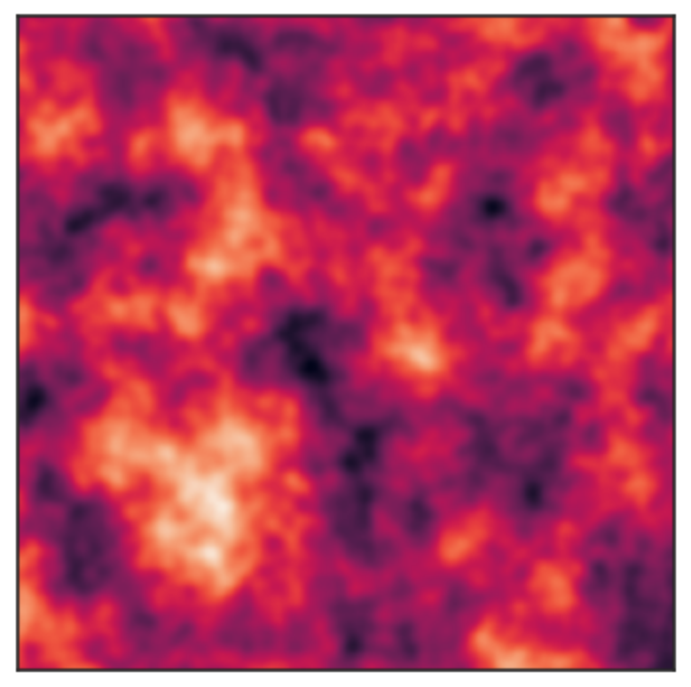

LAPD Plasma Analysis
analyzing turbulence in the Large Plasma Device
waveform.ai
designing and building a machine-learning integrated analog synthesizer

Stochastic Mechanics
simulating atomic transitions using a non-standard stochastic approach towards validating a promising new picture of quantum gravity

Optical Turbulence Modeling
developing a new method for simulating atmospheric optical turbulence using fractal noise
(WIP) A Visual Introduction to Magnetic Coordinates
a brief exposition which attempts to convey a geometric intuition for the common coordinate systems used to describe magnetic confinement geometries